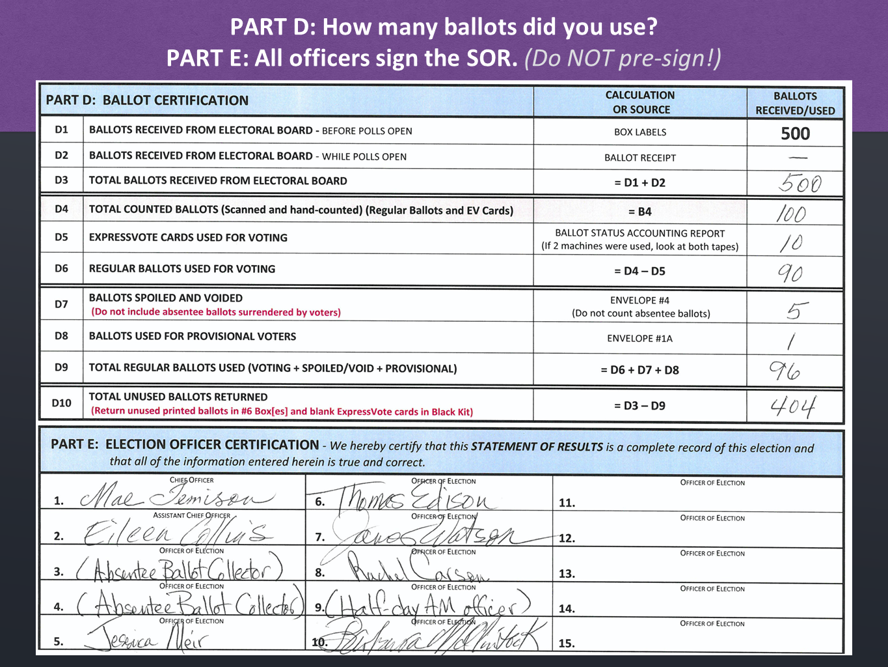

Example SOR, Part 2
Now let’s look at the next two sections of the SOR.
PART D: In this section, we want to account for all ballots you received and whether they were used or not. Let’s go row-by-row.
- D1: This is for how many ballots you received before polls open. We know how many ballots we send to each precinct, so the first row will be pre-filled for you.
- D2: This is ballots received from Electoral Board while polls are open. If the number of voters in your precinct is higher-than-expected, we may send you additional ballots during the day. If so, you would account for it here. In this example, no extra ballots were needed, so they wrote a dash for 0.
- D3: This is the total ballots received, which is simply the sum of the previous two numbers. In this example, the precinct received 500 ballots before election day and 0 extra ballots during the day, so they received a total of 500 ballots.
- D4: This is the number for total counted ballots (scanned and hand-counted), which includes both regular ballots and ExpressVote cards. The total counted ballots number is taken from Part B (line B4).
- D5: This is the number for how many ExpressVote cards were counted. You can locate this number on the DS200 tape’s Ballot Status Accounting Report, next to the heading “Total ExpressVote Cards.” Note that the number you write here should be the sum from all DS200s used for voting.
- D6: This is the number for how many regular printed ballots were counted. You can locate this number on the DS200 tape’s Ballot Status Accounting Report, next to the heading “Public Count.” Note that the number you write here should be the sum from all DS200s used for voting.
- D7: This is the total number of spoiled and voided ballots. As a reminder, voided ballots are from fleeing voters and spoiled ballots are ballots that needed to be replaced because a voter made a mistake. You should be able to easily count these ballots because you have been putting them in envelope #4 during the day. IMPORTANT: As noted in the red text, do NOT include any absentee ballots surrendered by voters.
- D8: This is the number of ballots used for provisional voters. In this example, we can see they had 1 provisional voter.
- D9: This is the number of total regular ballots used in some way: counted (voted), spoiled or voided, or used for provisional voters. This number is the sum of lines D6 + D7 + D8.
- D10: This is the number of total regular ballots unused and returned, which is the difference between Line D3 (total regular ballots received) and D9 (total regular ballots used). In our example, 404 ballots are being returned.
This is a lot of numbers but trust us – it’s easier than it looks! And as always, if you need help, please feel free to call the office on election day.
Part E: This is where all election officers present sign to acknowledge they certify the results.
- Do NOT have your officers pre-sign during the day. We have occasionally received SORs back that have all their officer signatures - but no information completed above! Don’t be that precinct.
- If you have officers who were sworn in but not present for closing procedures, note that in their designated signature spot on the SOR. For example, write in “Absentee Ballot Collector” or “Half-Day AM Officer” to explain why those officers did not sign the SOR. This helps us quickly figure out the difference between an officer who intentionally did not sign the SOR and an officer who simply forgot to sign the SOR!